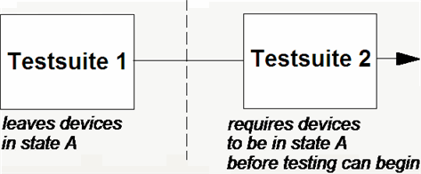

Porting Non Self-contained Testsuites
In general, testsuites should be kept self-contained whenever possible (see Self-contained Testsuites).
This can often be done without any negative effect on the test time. If you call, for example, the CONNECT API at the start of your test method to make the testsuite independent of any previous actions, this will not prolong the test unnecessarily, since this API executes the connect sequence only if necessary.
There may, however, be rare situations where you cannot do without a non self-contained testsuite. In this case there are two main strategies for porting the testflow to a multisite scenario.
Non-self-contained testsuites are testsuites that affect the way subsequent testsuites deal with devices (leaving devices in certain states, for example), and as such cannot be totally isolated in the testflow. Take, for example, the figure below. This shows a setup testsuite 1 whose purpose is to leave devices in a certain state so that testsuite 2 can test them correctly.

However, if this testflow were ported as is to a multisite scenario, if a failing device is binned in testsuite 1, a disconnect sequence is executed. The standard disconnect sequence sends a SQST OFF (sequencer state off) command to all sites, which can have the effect that the passed sites also lose their state. If this state is a pre-requisite for testsuite 2, all sites will automatically fail testsuite 2, even though they might have passed.
The first strategy exploits the fact that sites that have been binned as failed lose the setup focus. The solution consists in replacing the standard disconnect sequence, which uses SQST OFF, by a user defined disconnect sequence which uses the firmware command DLSO instead. Since DLSO only affects the sequencers of the sites that are in setup focus, this will preserve the state of the passed sites. For details on creating a user defined disconnect sequence see Command Reference.
The second strategy tries to delay binning until such time as you can afford to do so. This strategy can be implemented in several different ways, which will be discussed in the following subsections.
Functional changes
- Introduced before SmarTest 6.3.2